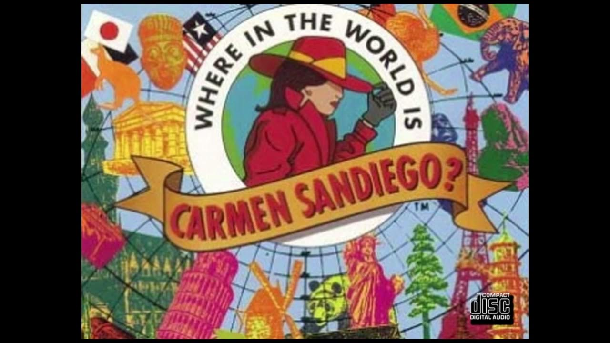
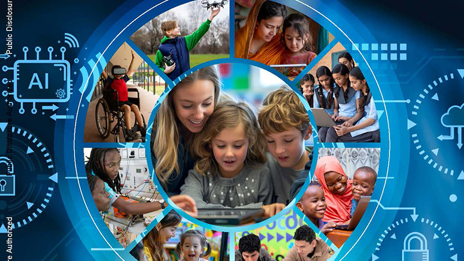
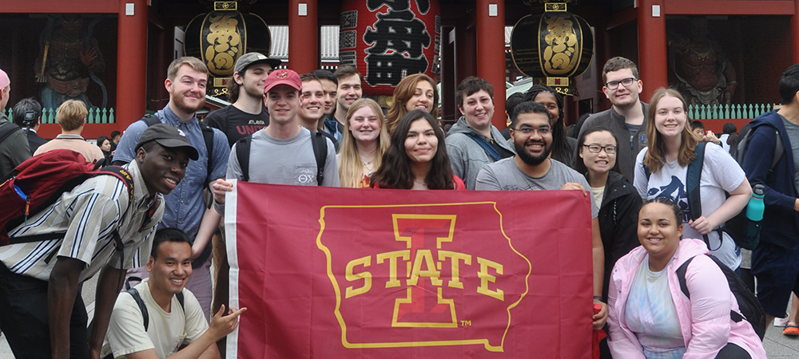
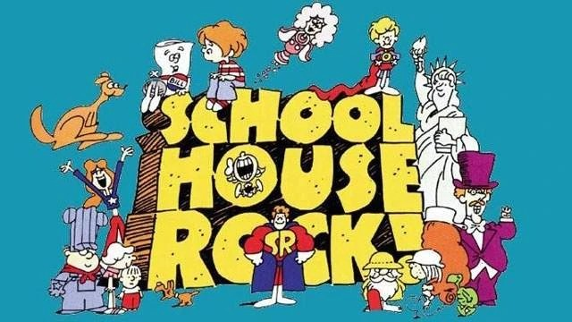

The United Nations Sustainable Development Goals (SDGs) are a shared blueprint for addressing some of the biggest challenges facing humanity: poverty, hunger, inequality, climate change, and more. They are a reminder that the world’s problems are interconnected—and so are we. No country can tackle these issues alone. Our choices, our policies, and even our daily lives are linked to people we will never meet, living in places we may never visit.
When I look at the SDGs, the one that stands out to me as especially powerful is Goal 4: Ensure inclusive and equitable quality education and promote lifelong learning opportunities for all. To me, Goal 4 feels like the goal that helps unlock the rest. Education is how we learn to see beyond ourselves, understand each other, and imagine better solutions than the ones we inherited.
Goal 4 as a Catalyst
Education does more than transfer information. It pushes back against ignorance, fear, and misinformation. It gives people tools to question systems, imagine alternatives, and create change. If more people had access to free, high-quality primary education and truly affordable postsecondary opportunities, it would be easier to address other goals as well—from reducing poverty and hunger to tackling inequality and promoting peace.
Investing in education is a way of investing in every other SDG at the same time. When people learn, they are better equipped to participate in their communities, advocate for their rights, and contribute to solutions that work in their local context. Education helps create space for creativity, innovation, and empathy—all things we desperately need in a world facing complex, overlapping crises.
Seeing the Gaps
My own educational path has not always reflected the full diversity of the world. Much of what I was taught centered on white, Western perspectives. That meant there were entire histories, cultures, and bodies of knowledge that I didn’t encounter until much later in life, if at all. Recognizing those gaps has been uncomfortable, but important. It reminds me that global learning is not something that happens once and then ends—it’s an ongoing, lifelong commitment.
For me, engaging with the SDGs means actively seeking out perspectives I didn’t grow up with, listening to voices that haven’t always been centered, and letting that knowledge change how I move through the world. It means understanding that education is not neutral: whose stories get told, whose experiences are prioritized, and whose knowledge is valued all shape what we believe is possible.
Adding Color Through Learning
When I think back to the 80s cartoons I loved, so many of them carried the same underlying message: the world is brighter when everyone’s strengths and differences are recognized. In a way, the SDGs are a real-world extension of that idea. They are a global agreement that everyone deserves the chance to live with dignity, opportunity, and hope.
My role in that bigger picture may be small, but it still matters. By continuing my own education, supporting access to learning for others, and staying curious about cultures and experiences beyond my own, I can contribute to the spirit of Goal 4 in everyday ways. Education is how we add new colors to our understanding of the world—and how we learn to see each other more clearly.

Ultimately, the Sustainable Development Goals are a reminder that we are all connected, and that the future we build will depend on how willing we are to learn, to listen, and to act together.